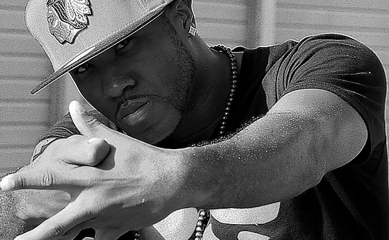

Welcome to the KRUMP world. where you will get all the information about KRUMP.
Origins. The root word krump came from the lyrics of a 1990 song and is sometimes spelled K.R.U.M.P., which is an acronym for Kingdom Radically Uplifted Mighty Praise, and presents krumping as a faith-based artform. Although krumping was not directly created by Tommy, it was inspired by his clowning.
Elements of KRUMP
Please click on the link for KRUMP tutorials. JUDE media channel page

| STUMP | CHEST POP | JABS | WAIST SNAPS | LEG MOVEMENTS |
|---|---|---|---|---|
| Legs | Chest | Hand | Waist | Legs |